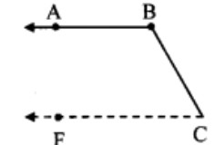

Parallel Lines
Let's Learn
Parallel lines : The lines which are coplanar and do not intersect each other are called parallel lines.
Practice set 2.1
1. In the given figure, line RP || line MS and line DK is their transversal. ∠DHP = 85°. Find the measures of following angles.
i. ∠RHD
ii. ∠PHG
iii. ∠HGS
iv. ∠MGK
Solution :
i. ∠DHP = 85° …..(i)
∠DHP + ∠RHD = 180° [Angles in a linear pair]
85° + ∠RHD = 180°
∴ ∠RHD = 180°- 85°
∴ ∠RHD = 95° …..(ii)
ii. ∠PHG = ∠RHD [Vertically opposite angles]
∴ ∠PHG = 95° [From (ii)]
iii. line RP || line MS and line DK is their transversal. [Corresponding angles]
∴ ∠HGS = ∠DHP …..(iii) [From (i)]
iv. ∠HGS = 85° [Vertically opposite angles]
∴ ∠MGK = ∠HGS ∠MGK = 85° [From (iii)]
2.
In the given figure line p line q and line l and line m are tranversals.
Measures of some angles are shown. Hence find the measures of ∠a, ∠b, ∠c, ∠d.
Solution :
i. 110 + ∠a = 180° [Angles in a linear pair]
∴ ∠a = 180° – 110°
∴ ∠a = 70°
ii. consider ∠e as shown in the figure line p || line q, and line lis their transversal.
∠e + 110° = 180° [Interior angles]
∴ ∠e = 180° – 110°
∴ ∠e = 70°
But, ∠b = ∠e [Vertically opposite angles]
∴ ∠b = 70°
iii. line p || line q, and line m is their transversal.
∴ ∠c = 115° [Corresponding angles]
iv. 115° + ∠d = 180° [Angles in a linear pair]
∴ ∠d = 180° – 115°
∴ ∠d = 65°
3.
In the given figure, line 11| line m and line n || line p. Find ∠a, ∠b, ∠c from the given measure of an angle.
Solution :
i. consider ∠d as shown in the figure
line l || line m, and line p is their transversal.
∴ ∠d = 45° [Corresponding angles]
Now, ∠d + ∠b = 180° [Angles in a linear pair]
∴ 45° +∠b = 180°
∴ ∠b = 180° – 45°
∴ ∠b = 135° …..(i)
ii. ∠a = ∠b [Vertically opposite angles]
∴ ∠a = 135° [From (i)]
iii. line n || line p, and line m is their transversal.
∴ ∠c = ∠b [Corresponding angles]
∴ ∠c = 135° [From (i)]
4.
In the given figure, sides of ∠PQR and ∠XYZ are parallel to each other. Prove that, ∠PQR ≅ ∠XYZ.
Given: Ray YZ || ray QRandray YX || ray QP
To prove: ∠PQR ≅ ∠XYZ
Construction: Extend ray YZ in the opposite direction. It intersects ray QP at point S.
Solution :
Proof:
Ray YX || ray QP [Given]
Ray YX || ray SP and seg SY is their transversal [P-S-Q]
∴ ∠XYZ ≅ ∠PSY ……(i) [Corresponding angles]
ray YZ || ray QR [Given]
ray SZ || ray QR and seg PQ is their transversal. [S-Y-Z]
∴ ∠PSY ≅ ∠SQR [Corresponding angles]
∴ ∠PSY ≅ ∠PQR …….. (ii) [P-S-Q]
∴ ∠PQR ≅ ∠XYZ [From (i) and (ii)]
5.
In the given figure, line AB || line CD and line PQ is transversal. Measure of one of the angles is given. Hence find the measures of the following angles.
i. ∠ART
ii. ∠CTQ
iii. ∠DTQ
iv. ∠PRB
Solution:
i. ∠BRT = 105° ….(i)
∠ART + ∠BRT = 180° [Angles in a linear pair]
∴ ∠ART + 105° = 180°
∴ ∠ART = 180° – 105°
∴ ∠ART = 75° …(ii)
ii. line AB || line CD and line PQ is their transversal.
∴ ∠CTQ = ∠ART [Corresponding angles]
∴ ∠CTQ = 75° [From (ii)]
iii. line AB || line CD and line PQ is their transversal.
∴ ∠DTQ = ∠BRT [Corresponding angles]
∴ ∠DTQ = 105° [From (i)]
iv. ∠PRB = ∠ART [Vertically opposite angles]
∴ ∠PRB = 75° [From (ii)]
Practice set 2.2
1. In the given figure, y = 108° and x = 71°. Are the lines m and n parallel? Justify?
Solution :
y = 108°, x = 71° …[Given]
x + y = 71° + 108°
= 179°
∴ x + y = 180°
∴ The angles x andy are not supplementary.
∴ The angles do not satisfy the interior angles test for parallel lines
∴ line m and line n are not parallel lines.
2.
In the given figure, if ∠a = ∠b then prove that line l || line m.
Given: ∠a ≅ ∠b
To prove: line l| line m
Solution:
Proof:
consider ∠c as shown in the figure ∠a ≅ ∠c …….. (i) [Vertically opposite angles]
But, ∠a ≅ ∠b I (ii) [Given]
∴ ∠b ≅ ∠c [From (i) and (ii)]
But, ∠b and ∠c are corresponding angles on lines l and m when line n is the transversal.
∴ line l || line m. [Corresponding angles test]
3.
In the given figure, if ∠a ≅ ∠b and ∠x ≅ ∠y, then prove that line l | line n.
Given: ∠a ≅ ∠b and ∠x ≅ ∠y
To prove: line l | line n
Solution:
Proof:
∠a = ∠b [Given]
But, ∠a and ∠b are corresponding angles on lines l and m when line k is the transversal.
∴ line l || line m ….(i) [Corresponding angles test]
∠x ≅ ∠y [Given]
But, ∠x and ∠y are alternate angles on lines m and n when seg PQ is the transversal,
∴ line m || line n ……(ii) [Alternate angles test]
∴ From (i) and (ii),
line l || line m || line n
i.e., line l || line n
4.
In the given figure, if ray BA || ray DE, ∠C = 50° and ∠D = 100°. Find the measure of ∠ABC.
(Hint: Draw a line passing through point C and parallel to line AB.)

Solution :
Draw a line FG passing through point
C and parallel to line AB
line FG || ray BA …….(i) [Construction]
Ray BA || ray DE ….(ii) [Given]
line FG || ray BA || ray DE …(iii) [From (i) and (ii)]
line FG||rayDE [From (iii)]
and seg DC is their transvensal
∴ ∠ DCF = ∠ EDC [Alternate angles]
∴ ∠ DCF = 100° [∵ ∠D = 100°]
Now, ∠ DCF = ∠ BCF + ∠ BCD [Angle addition property]
∴ 100° = ∠BCF + 50°
∴ 100° – 50° = ∠BCF
∴ ∠BCF = 50° ….(iv)
Now, line FG || ray BA and seg BC is their transversal.

∴ ∠ABC + ∠BCF = 180° [Interior angles]
∴ ∠ABC + 50° = 180° [From (iv)]
∴ ∠ABC = 180°- 50°
∴ ∠ABC = 130°
5.
In the given figure, ray AE || ray BD, ray AF is the bisector of ∠EAB and ray BC is the bisector of ∠ABD. Prove that line AF || line BC.
Given: Ray AE || ray BD, and
ray AF and ray BC are the bisectors of ∠EAB and ∠ABD respectively.
To prove: line AF || line BC
Solution :
Proof:
Ray AE || ray BD and seg AB is their transversal.
∴ ∠EAB = ∠ABD ….(i) [Alternate angles]
∠FAB = 12∠EAB [Ray AF bisects ∠EAB]
∴ 2∠FAB = ∠EAB …..(ii)
∠CBA = 12∠ABD [Ray BC bisects ∠ABD]
∴ 2∠CBA = ∠ABD …(iii)
∴ 2∠FAB = 2∠CBA [From (i), (ii) and (iii)]
∴ ∠FAB = ∠CBA
But, ∠FAB and ∠ABC are alternate angles on lines AF and BC when seg AB is the transversal.
∴ line AF || line BC [Alternate angles test]
6.
A transversal EF of line AB and line CD intersects the lines at points P and Q respectively. Ray PR and ray QS are parallel and bisectors of ∠BPQ and ∠PQC respectively. Prove that line AB || line CD.

Given: Ray PR || ray QS
Ray PR and ray QS are the bisectors of ∠BPQ and ∠PQC respectively.
To prove: line AB || line CD
Solution :
Proof:
Ray PR || ray QS and seg PQ is their transversal.
∠RPQ = ∠SQP ….(i) [Alternate angles]
∠RPQ = 12∠BPQ …. (ii) [Ray PR bisects ∠BPQ]
∠SQP = 12∠PQC [Ray QS bisects ∠PQC]
∴ 12∠BPQ = 12∠PQC
∴ ∠BPQ = ∠PQC
But, ∠BPQ and ∠PQC are alternate angles on lines AB and CD when line EF is the transversal.
∴ line AB || line CD [Alternate angles test]